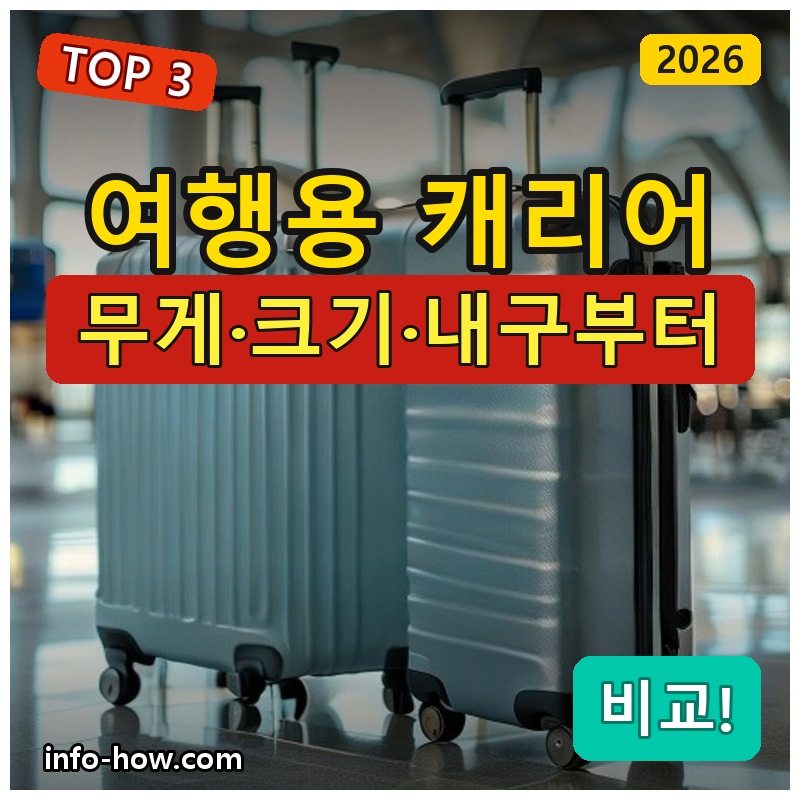
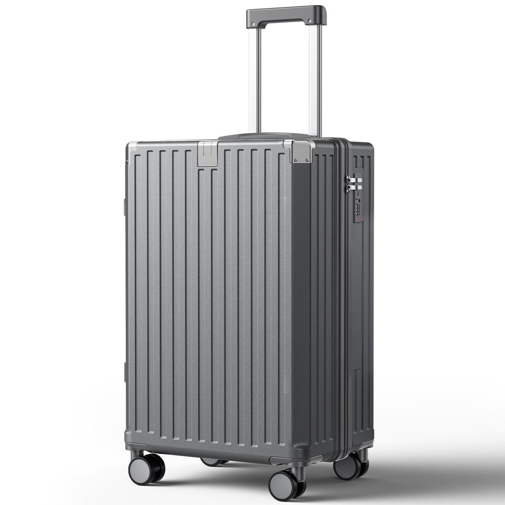
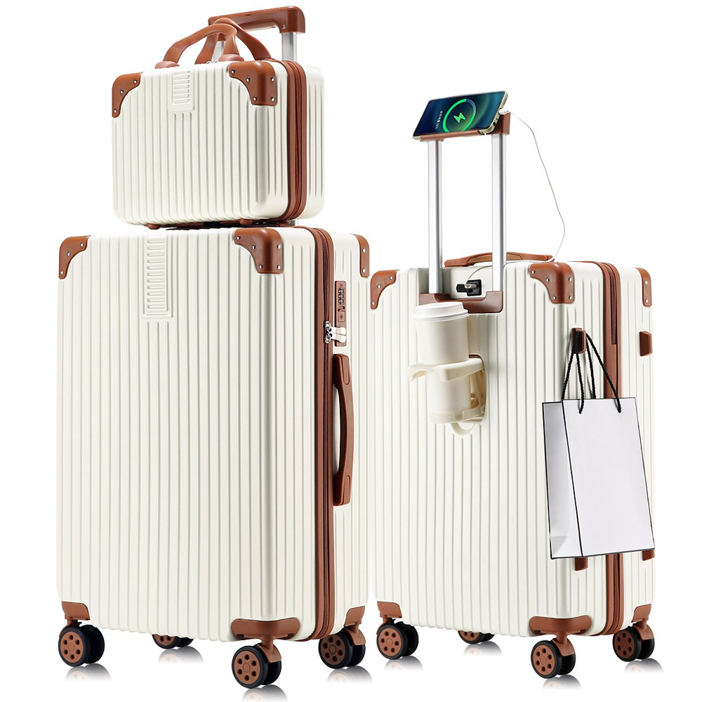
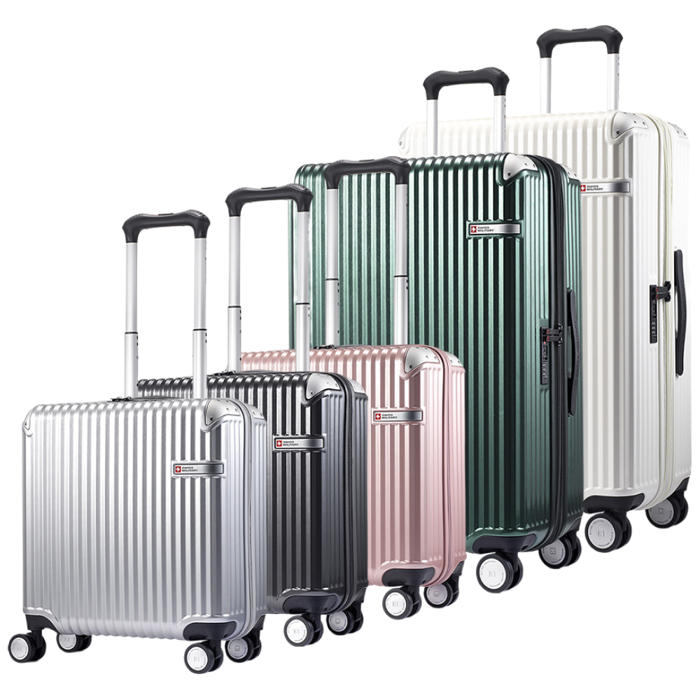

홈 › 제품리뷰 › 캠핑/레저
여행용 캐리어, 가성비냐 튼튼함이냐
작성: 생활서식 모음 · 2026-08-23

파트너스 활동의 일환으로 일정액의 수수료를 지급받습니다
🛒 오늘의 쿠팡 특가 보러가기 →
여행용 캐리어, 여행 앞두고 사려는데 뭘 살까요?
핵심은 "무게와 크기(기내/위탁), 내구" 3대 를
"저렴한 하드" "초경량 2종세트" "튼튼한 중대형"용도별 정답 까지 담았으니
📋 목차
여행용 캐리어, 가성비냐 튼튼함이냐 — 결론 먼저 스펙 비교표: 한눈에 보기 캐리어 고를 때 봐야 할 4가지 가성비냐 내구냐, 뭘 사야 할까? 자주 묻는 질문 (FAQ) 결론: 한 줄 요약
여행용 캐리어, 가성비냐 튼튼함이냐 — 결론 먼저
캐리어는 "크기(기내/위탁)와 무게·내구" 로 갈려요.가성비 하드 , 기내+위탁 둘 다면 초경량 2종세트 , 오래 튼튼하게면 중대형 이 무난합니다.
1 가성비·입문 (가성비 초이스)
가성비

가성비 하드
1. 리틀앤트 다기능 여행용 하드 캐리어
초경량 세트·중대형은 아니어도
추천 대상
캐리어를 저렴하게 하나 마련하려는 분 가벼운 여행·출장용을 원하는 분 하드 케이스로 내용물을 보호하려는 분 장점
1만원대로 부담 없이 하드 캐리어 마련 하드 케이스라 내용물 보호에 유리 가벼운 여행·출장에 무난 단점
이 제품은 가성비·입문용 입니다. 기내+위탁 둘 다면 2번 세트, 튼튼함이면 3번 중대형으로 가세요. "한 개"면 가성비 좋아요.
한줄 리뷰
"캐리어 하나 저렴하게"면 리틀앤트가 무난합니다. 가벼운 여행엔 충분해요. 세트·내구면 2·3번을 보세요.
주요 스펙
제품: 리틀앤트 여행용 하드 캐리어 타입: 하드 케이스 용도: 가성비·입문 배송: 로켓배송 가격: 약 19,800원 (변동 가능) ※ 실제 스펙·가격과 차이가 있을 수 있습니다
2 세트·실속 (베스트 초이스)
베스트

초경량 2종세트
2. REGESY 초경량 캐리어 2종 세트 (기내+위탁)
기내+위탁 2종을 한 번에
추천 대상
기내용·위탁용을 한 번에 갖추려는 분 가벼운 초경량 캐리어를 원하는 분 가족·커플이 크기별로 나눠 쓰려는 분 장점
2종 세트라 기내+위탁을 한 번에 마련 초경량이라 들고 옮기기 편함 360도 저소음 휠로 끌기 편하고 조용함 단점
한 개면 1번, 오래 튼튼함이면 3번 중대형입니다. 2번은 "초경량 2종세트" 의 실속 구간 — 기내+위탁에 가장 무난합니다.
한줄 리뷰
"기내+위탁 둘 다 초경량으로"면 REGESY 세트가 좋습니다. 활용도가 높아요. 최고 내구면 3번을 보세요.
주요 스펙
제품: REGESY 초경량 캐리어 2종 세트 구성: 기내용+위탁용 특징: 초경량·저소음 휠 배송: 로켓배송 가격: 약 45,800원 (변동 가능) ※ 실제 스펙·가격과 차이가 있을 수 있습니다
3 내구·중대형 (프리미엄)
프리미엄

튼튼한 중대형
3. 스위스밀리터리 튼튼한 여행용 캐리어 (솔리오)
튼튼한 내구와 브랜드로
추천 대상
장기 여행·잦은 출장에 튼튼한 캐리어를 원하는 분 내구·마감·브랜드를 중시하는 분 중대형으로 짐을 넉넉히 넣으려는 분 장점
튼튼한 내구라 잦은 여행·위탁에도 안심 브랜드라 마감·완성도가 좋음 중대형이라 짐을 넉넉히 수납 단점
저렴한 한 개면 1번, 초경량 세트면 2번이 합리적입니다. 3번은 튼튼한 내구+중대형 이 필요한 분에게 값어치가 있습니다.
한줄 리뷰
"오래 튼튼하게, 짐 넉넉히"면 스위스밀리터리가 좋습니다. 내구가 든든해요. 가벼운 여행이면 1·2번이 합리적입니다.
주요 스펙
제품: 스위스밀리터리 캐리어 솔리오 크기: 중대형(기내~위탁) 특징: 내구·브랜드 배송: 로켓배송 가격: 약 146,000원 (변동 가능) ※ 실제 스펙·가격과 차이가 있을 수 있습니다
스펙 비교표: 한눈에 보기
가격·풍량·무게 중 본인에게 중요한 기준부터 보세요. "최고" 표시는 3제품 중 객관적 1위 값입니다.
← 좌우로 스크롤 →
캐리어 고를 때 봐야 할 4가지
크기·무게만 챙겨도 후회가 적습니다.
1) 크기 — 기내/위탁
기내용은 20인치 안팎(항공사 규정 확인) 위탁은 24~28인치, 여행 기간에 맞게 기내+위탁 둘 다면 세트가 편함 2) 무게 — 초경량
캐리어 자체가 무거우면 위탁 수하물 무게에 부담 초경량 제품이 짐을 더 넣을 여유를 줌 들고 계단·대중교통 이동에도 유리 3) 내구·재질 — 하드/소프트
하드(PC·ABS)는 내용물 보호에 유리 소프트는 가볍고 수납 포켓이 많음 위탁이 잦으면 내구가 좋은 제품 4) 바퀴·잠금 — 편의
360도 4륜에 저소음 휠이 끌기 편함 TSA 잠금이면 해외여행에 유리 핸들 높이·튼튼함도 확인 가성비냐 내구냐, 뭘 사야 할까?
여행 빈도와 크기만 정하면 답이 나옵니다.
가성비·입문: 1번 리틀앤트 → 저렴하게세트·실속: 2번 REGESY → 기내+위탁내구·중대형: 3번 스위스밀리터리 → 튼튼자주 묻는 질문 (FAQ)
Q1. 기내용 캐리어 크기는 몇 인치인가요? 보통 20인치 안팎이며 항공사 규정을 확인해야 합니다. 기내 반입은 항공사마다 크기·무게 규정이 있어 보통 20인치(가로+세로+높이 합 115cm 내외) 정도가 기준입니다. 저비용항공은 규정이 더 엄격할 수 있으니 이용 항공사의 기내 수하물 규정을 확인하고 그에 맞는 크기를 고르세요.
Q2. 하드 캐리어와 소프트 캐리어 중 뭐가 나은가요? 보호력이면 하드, 가벼움·수납이면 소프트입니다. 하드(플라스틱)는 외부 충격에서 내용물을 보호하고 방수에 유리하며, 소프트(천)는 가볍고 외부 포켓이 많아 수납이 편합니다. 위탁이 잦고 내용물 보호가 중요하면 하드, 가벼움·확장성을 원하면 소프트가 어울립니다.
Q3. 캐리어 무게가 왜 중요한가요? 위탁 수하물 무게 제한 때문입니다. 항공 위탁은 무게 제한(보통 15~23kg)이 있어, 캐리어 자체가 무거우면 넣을 수 있는 짐이 줄어듭니다. 초경량 캐리어는 같은 제한 안에서 더 많은 짐을 넣을 수 있고 들고 이동하기도 편합니다. 그래서 무게는 중요한 선택 기준입니다.
Q4. 바퀴(휠)는 어떤 게 좋나요? 360도 4륜 저소음 휠이 편합니다. 4개 바퀴가 360도 회전하면 밀고 끌기가 자유롭고, 저소음 휠은 공항·거리에서 조용하고 부드럽게 굴러갑니다. 바퀴는 고장이 잦은 부위이므로 튼튼하고 교체 가능한 제품이면 더 좋습니다.
Q5. TSA 잠금장치가 꼭 필요한가요? 해외(특히 미국) 여행에 유리합니다. TSA 잠금은 보안검색 시 세관이 전용 키로 열어볼 수 있어, 잠금을 부수지 않고 검색이 가능합니다. 미국 등 해외여행이 잦으면 TSA 잠금이 편하고, 국내·근거리 위주면 일반 잠금으로도 무방합니다.
결론: 한 줄 요약
1) 리틀앤트 하드 — 약 19,800원 / 가성비·입문. 저렴한 하드.2) REGESY 2종세트 — 약 45,800원 / 세트·실속. 기내+위탁.3) 스위스밀리터리 — 약 146,000원 / 내구·중대형. 튼튼.이 포스팅은 쿠팡 파트너스 활동의 일환으로, 이에 따른 일정액의 수수료를 제공받습니다.